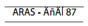

Aras Yayıncılık
İstiklal Caddesi, Hıdivyal Palas 231/Z.
34430 Tünel, Beyoğlu-İstanbul
Tel: (0212) 252 65 18 - 243 06 02
Fax: (0212) 252 65 19
Sertifika No: 10728

Mıgırdiç Margosyan
Tespih Taneleri
Kapak Tasarımı
Mehmet Sinan Niyazioğlu
Kapak Fotoğrafı
“Kafle” artığı iki Heredanlı (Diyarbakır, 1940’lı yıllar)
Dişçi Sarkis, nam-ı diğer Dişçi Ali, köylüsü ve has arkadaşı Taşçı Mıgırdiç’in, nam-ı diğer Zıfkar’ın ya da lakabıyla “Maraşal”ın dişini tedavi ederken.
Dişçi Sarkis yazarın babasıdır, “Maraşal” ise ünlü sinema oyuncusu Sami Hazinses’in ya da Samuel’in, “Samo”nun…
*
Dişçi Ali İstanbul Şişli’deki, “Maraşal” Diyarbakır’daki, oğlu “Samo” ise Kadıköy’deki Ermeni mezarlığında yatıyor;
birer tespih tanesi…
ISBN 978-975-7265-87-X
Baskı
Sena Ofset
2. Matbaacılar Sitesi 4NB7-9-11 Topkapı-İstanbul
Tel: (0212) 613 03 21 / Sertifika No: 12064
Birinci Baskı: Ekim 2006, İstanbul
Sekizinci Baskı: Ağustos 2012, İstanbul